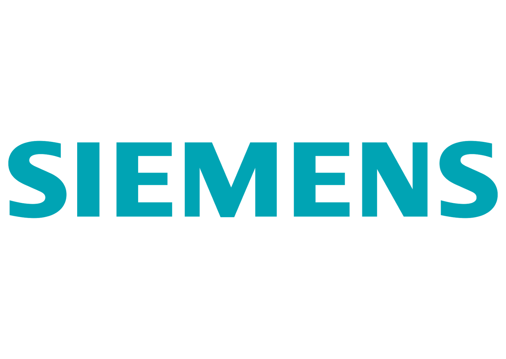

Experience
July 2024 - Present
Engineer - Automation & Digitalisation

Atlascopco Group (GECIA), Pune
- Contributing to the GECIA Industry 4.0 Lab development.
- Architecting and implementing MES-PLC communication (Kepware, OPC UA).
- Developing Process Simulations (Visual Components) for customer centers.
- Building Computer Vision POCs (YOLO) for O-Ring & Kit Checking.
- Configuring Azure IoT Hub pipelines for sensor data analysis (Power BI).
- Leading NLP (LinguaLink) and Chatbot POCs.
Project work is detailed in the Projects section.
June 2023 - August 2023
Research Intern (AI & Metaverse) 
Siemens Technology, Bengaluru
- Developed a Virtual Factory in Unity 3D for an industrial metaverse project.
- Applied a Genetic Algorithm for optimized factory layout planning.
- Designed an Employee Authentication Model for secure access in the metaverse.